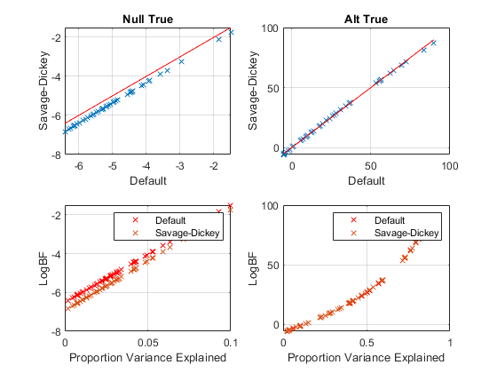

clear all
close all
N=100;
P=4;
Reps=50;
method='T';
R2_avg = 0.5;
logBF_type={'Savage-Dickey','MultiFit','Default'};
ix=3;
iy=1;
general_design=1;
if general_design
rx=0.7; mx=3;
X(:,1)=randn(N,1)+mx;
for i=2:P-1,
X(:,i)=X(:,i-1)+rx*randn(N,1)+mx;
end
X(:,P)=ones(N,1);
else
X=spm_dctmtx(N,P);
X(:,1)=X(:,P);
X(:,P)=ones(N,1);
end
glm.X=X;
glm.pE=zeros(P,1);
glm.pC=eye(P);
w_true = spm_normrnd(glm.pE,glm.pC,Reps);
y_true = X*w_true;
vy = mean(std(y_true).^2);
ve = vy*(1-R2_avg)/R2_avg;
glm.Ce = ve*eye(N);
alt_true=[0,1];
hname={'Null True','Alt True'};
for h=1:2,
for r=1:Reps,
if alt_true(h), wr=w_true(:,r);
else wr = zeros(P,1);
end
e = sqrt(ve)*randn(N,1);
y = X*wr+e;
[logBF,glm_post] = bayes_glm_regression (X,y,method);
logbf_x(h,r)= logBF(ix);
logbf_y(h,r) = logBF(iy);
R2(h,r) = glm_post.R2;
end
subplot(2,2,h);
plot(logbf_x(h,:),logbf_y(h,:),'x');
hold on
xlabel(logBF_type{ix});
ylabel(logBF_type{iy});
grid on
[tmp,ind]=sort(logbf_x(h,:));
hold on
plot(tmp,tmp,'r-');
title(hname{h});
subplot(2,2,h+2);
plot(R2(h,:),logbf_x(h,:),'rx');
hold on
grid on
plot(R2(h,:),logbf_y(h,:),'x');
legend({logBF_type{ix},logBF_type{iy}});
xlabel('Proportion Variance Explained');
ylabel('LogBF');
end
